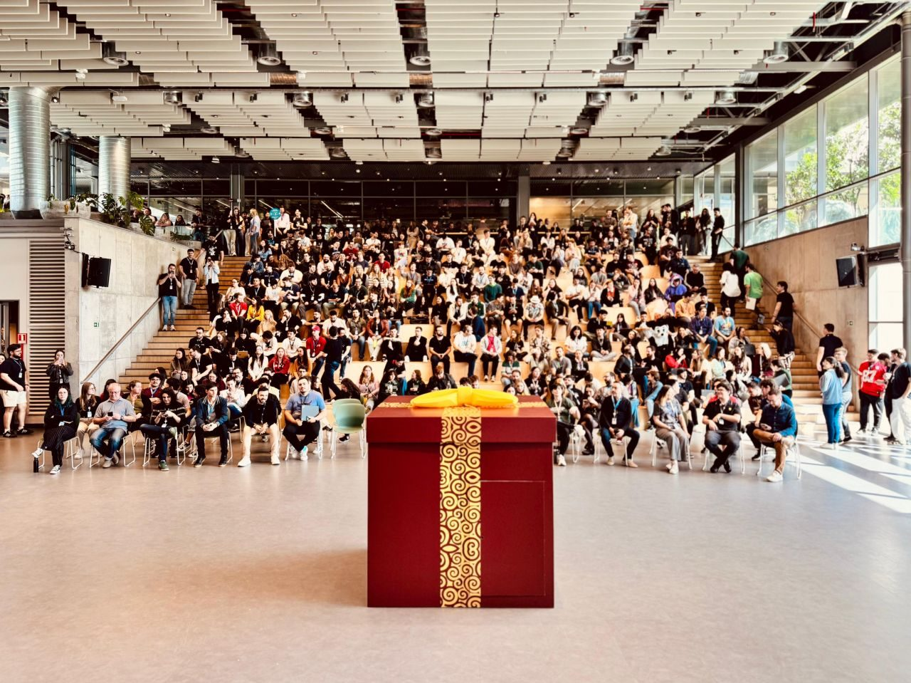
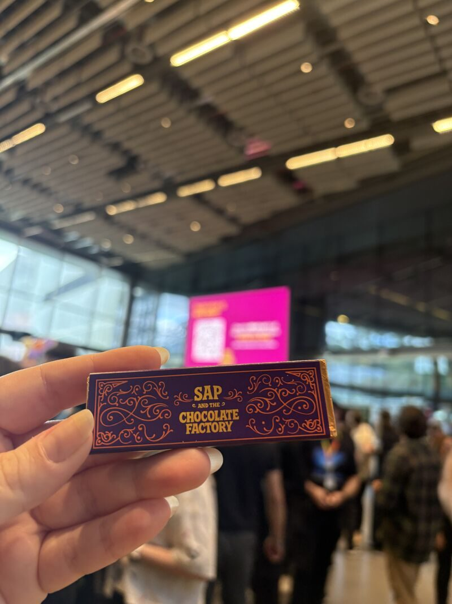

Experience design · Internal engagement
SAP End-of-Year Party
I designed and led an internal engagement experience for our End-of-Year celebration, with an immersive "SAP & the Chocolate Factory" theme. Using anticipation and storytelling, I sparked curiosity and interaction across the office, showing how thoughtful experiences, even simple ones, can create emotional connection, engagement, and a sense of relevance.